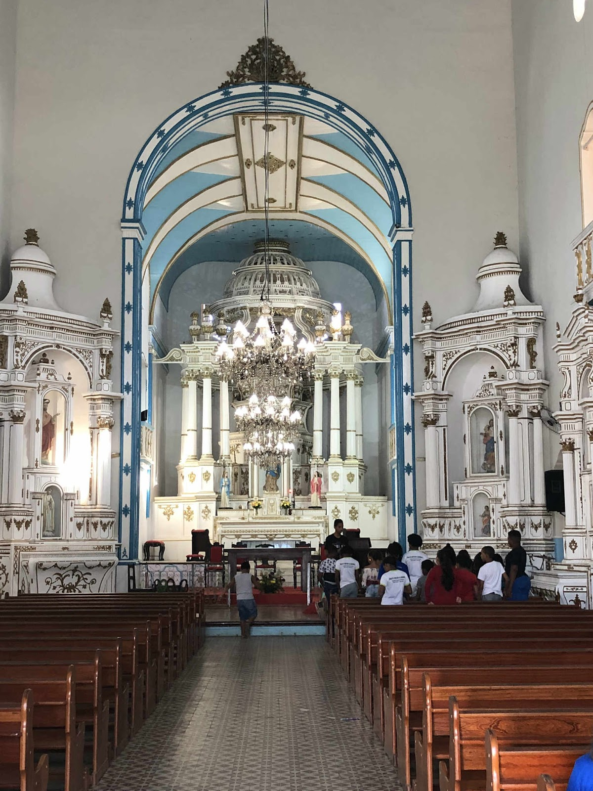

A Igreja Matriz Nossa Senhora da Assunção em Camamu, Bahia, está em processo de restauração e foi considerada em bom estado de conservação após os trabalhos de recuperação. Segundo avaliações do Tripadvisor (2025), a igreja foi restaurada e vale a pena visitar, com destaque para seu altar imponente, localização central e vista panorâmica da Baía de Camamu. Apesar de ter enfrentado momentos de abandono e degradação no passado, como apontado em relatos anteriores, os esforços recentes de preservação, especialmente em conjunto com ações do Instituto do Patrimônio Histórico e Artístico Nacional (IPHAN), têm melhorado significativamente sua condição.

- Estado atual: Em ótimo estado após restauração (2025).
- Localização: Rua Doutor Alfredo Martins, 13, Centro, Camamu – BA.
- Recomendado: Visitação para apreciar a arquitetura colonial e o patrimônio histórico da cidade